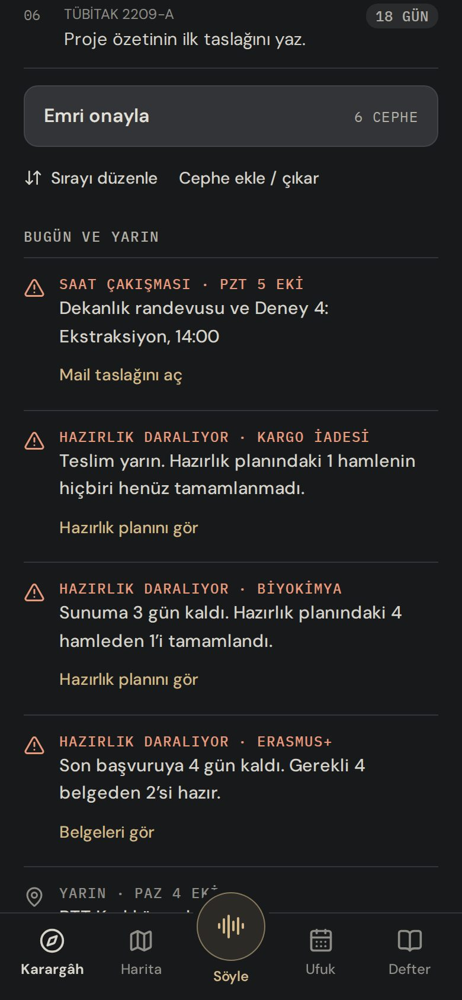
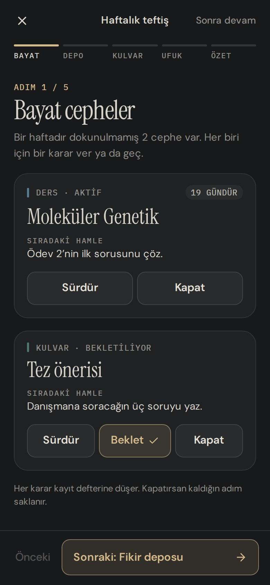

BERTHİER · TASARIM İNCELEMESİ · 4 EKİM 2026 · GRAFİT GECE
Rutinler ve dikte türleri
Rutinler için bir zaman katmanı ve dikteden gelen girdilerin yeni ayrımı. Örnek gün Pazartesi 5 Ekim 2026. Ekranlar 390 × 844; önce/sonra karşılaştırmalarında “önce” 3 Ekim’de çekilen gerçek ekran görüntüsüdür.
01
Sorun ve ilkeler
SORUN · RUTİN
Görev biter, rutin tekrar eder. “Şu ödevi tamamla” bir kez yapılır ve kapanır; yüz yogası haftada dört kez, gece 22:30 civarında, yarım saat kadar sürer. Hangi günler olduğu ve ne kadar sürdüğü akılda tutulamaz. Birkaç rutin üst üste binince zihin hepsini büyütür, zaman yönetilemez, kontrol hissi kaybolur ve rutin bırakılır.
SORUN · DİKTE
Berthier her cepheye dört türden birini zorunlu veriyor: ders, kulvar, başvuru, genel. Seçim tutarsız, “kulvar” adı oturmuyor, “genel” her şeyin düştüğü bir çekmece. Rutin eklenince “yüz yogası yap” bir hamle mi rutin mi, o da belirsizleşiyor. Kullanıcı türü göremiyor, düzeltemiyor.
İLKELER
- 01Önce gözlem, sonra düzen. Rutin tek bir niyetle girer: “haftada 4”. Gün, saat ve süreyi Berthier kayıtlardan öğrenir. Öğrenirken hatırlatmaz; hatırlatma, öğrendiğini kendi tahminine çevirir.
- 02Ayna, emir değil. Berthier öğrendiğini tek cümleyle geri söyler. Kullanıcı onaylarsa haftalık düzen olur; bir günü değiştirmek tek dokunuş.
- 03Sayı haftanın. Günlük seri yok. Kaçan seans hafta içinde boş bir güne kayar; hafta 3/4 biterse 3/4 yazar, yorum eklenmez. Hep kaçan gün bir daha önerilmez.
- 04Süre görünür. Her rutinin ölçülen süresi ve günün kalan toplamı yazar. Büyütülen tahmin, ölçülen sayının yanında söner.
- 05İskele sökülür. Sayaç da hatırlatma da geçici destek. Süre oturunca sayaç tek dokunuşa, rutin oturunca hatırlatma kapanmaya önerilir.
- 06Hatırlatma durum bildirir. Rutin, haftanın sayısı, saat, süre; istenirse kullanıcının kendi cümlesi. Blok başına bir, günde bir kez. “Bugün değil” tek dokunuş ve bedelsiz.
- 07Tek ev. Rutinlerin hepsi Rutinler sekmesinde. Karargâh yalnız bugünün tek satırını gösterir ve oraya açılır. Rutinler emre, haritaya ve Ufuk’a girmez.
- 08Türü kullanıcı seçmez, görür. Berthier her girdiyi bir yere koyar ve ne yaptığını düz bir cümleyle söyler. Yanlışsa ikinci olası yer hazırdır; düzeltmek tek dokunuş.
02
Akış
Rutinler 21 Eylül’de tek bir dikteyle girer. İki hafta yalnız kayıt tutulur; 5 Ekim sabahı Berthier haftalık düzeni önerir. Sonrası haftalık pencereyle yürür; hatırlatma isteğe bağlıdır ve rutin oturunca sökülür.
1 · EKLEME · 21 EYL
Bir liste, bir niyet
“Rutinlerim: hafta içi her sabah sprint, haftada 4 yüz yogası…” Berthier her rutini sıklığıyla açar; saat ve süre söylenmişse tahmin olarak saklar. Akla geldikçe tek cümle: “Dead hang’i de ekle, her gün.” C1
2 · GÖZLEM · 14 GÜN
Yalnız kayıt
Rutinler sekmesi haftanın sayısını ve son kaydı gösterir. Kayıt “Başlat” ile sayaçla ya da sonradan “Yaptım” ile; dikteyle de olur: “Yogayı yaptım, 25 dakika.” Hatırlatma yok. A1 A5
3 · AYNA · PZT 5 EKİ
Haftalık düzen önerisi
“Yüz yogasını genelde Pzt, Çar, Cmt ve Paz 22:30’da yapıyorsun; ≈32 dk sürüyor.” Gün çipleri tek dokunuşla değişir. Kaydı az olan rutinin gözlemi sürer. A2
4 · HAFTA · PZT–PAZ
Bugün ve bu hafta
Bugünün rutinleri saatiyle, süresiyle ve kalan toplamla; altında her rutinin haftalık sayısı. “Bugün değil” ya da kaçan seans haftanın boş bir gününe kayar. A3 B3
5 · HATIRLATMA · İSTEĞE BAĞLI
Durum, emir değil
Düzeni onaylanan rutinde açılabilir. Bildirim gelene kadar aynı içerik, uygulama açıkken Söyle’nin üstündeki durum kartında. B1 B2
6 · TEFTİŞ · PAZAR 20:00
Haftanın sayıları
Teftişe bir adım eklenir: haftanın sayıları, kaydetmeyi unuttuğun seans, kayan günler için öneri, sökülebilecek iskele. D3
7 · OTURMA · ≈3 HAFTA
İskeleyi sök
Süre oturunca “Başlat” yerine “Yaptım”. Rutin hatırlatmadan önce başlıyorsa Berthier hatırlatmayı kapatmayı önerir; karar tek dokunuş. B4
03
Rutinler
Rutinlerin tek evi alt çubuktaki Rutinler sekmesi (K6). Üstte bugün: saat sırasıyla rutinler, araya giren sabit kalemler ve kalan süre. Altta bu hafta: her rutin için haftalık sayı. Kayıt satıra dokunarak açılan sayfadan; ekleme Söyle’den.
Gözlem kartı iki hafta boyunca üstte durur; ilerleme şeridi sefer defterinin hücreleriyle aynı dil. Bugün bölümü saat bilinmediği için plan değil, kayıt gösterir. Sağ üstteki + Söyle’yi “Yeni rutin” bağlamıyla açar.
Rutinler’deki “Haftalık düzen hazır” kartından açılır; sabah raporu gibi altta tek ana eylem ve alt çubuk yerine onay çubuğu. Önerilmeyen ama bir kez denenmiş gün kesik çizgiyle (Perşembe). Hatırlatma seçimi onayla birlikte verilir; “Yarısına” denemeyi kurar.
Bugün: saat sırası, sabit kalemler soluk (Ufuk’tan; düzenlenmez), arka arkaya yapılan rutinler tek satır ya da “↳”. Yapılan satır gerçek saati ve süreyi gösterir; üstü çizilmez. Sağ üstte yalnız kalan süre. Bu hafta: dolu nokta yapılan, boş nokta kalan seans; seri yok.
Dikte sayfasının kabuğu (1f): alttan açılır, tek ana eylem. Sayaç öğrenme döneminde ve süresi değişen rutinde ana eylemdir; süre oturunca “Yaptım” öne geçer (B4). “Bugün değil”in sonucu dokunmadan önce yazar.
Yüz yogası kaydedildi. 31 dk · bu hafta 1/4.
DüzeltGeri alSayaç tek durum yerinde (1g) durur; sekme değişse de görünür. Yeni bir dikte sonucu 8 saniye öne geçer, sonra sayaç geri gelir. Bitti’den sonra kart 8 saniye kalır: “Düzelt” bitiş saatini ya da süreyi değiştirir. Sayaç unutulursa, olağan sürenin iki katında açılışta “Hâlâ sürüyor mu?” sorulur.
Süre şeridi kafada büyütmenin ilacı: her ölçüm bir nokta, altın çizgi ortanca, halka kullanıcının ilk tahmini. Kendi sözü yalnız kullanıcı söylediyse ve aynen saklanır; kapatılabilir. Aşağıda (kaydırınca) son kayıtlar ve “Rutini durdur”: durdurulan rutin kayıtlarıyla saklanır, geri açılır.
Adımlar sefer şeridinin düğümleriyle: geçilen altın, süren adım halkalı, sıradaki numaralı. Bekleme günün toplamına girmez; Pazar’ın Bugün listesinde “08:00 Ekmek · pişirme · 10 dk” olarak durur. Gym gibi yolu olan rutinde yol süresi toplam içindedir ve satırda “yol dahil” yazar.
04
Hatırlatma
İÇERİK
Başlık: rutin ve saat. Gövde: haftanın sayısı (0 ise “haftanın ilk seansı”), zincirdeki rutin, toplam süre; gün sabit kalem taşıyorsa “22:30 boş”. Kendi cümlesi açıksa ikinci satır. Emir kipi yok, ünlem yok.
ZAMANLAMA
Bloğun saatinden 10 dk önce; yolu olan rutinde yol + 10 dk önce. Blok başına bir, rutin başına günde bir; tekrar yok. Sessiz saatlere (23:00–07:30) düşen hatırlatma gönderilmez, yalnız uygulama içinde görünür. Yapıldıysa ya da “bugün değil” dendiyse düşer.
BİLDİRİM GELENE KADAR
Uygulama açıksa, hatırlatma saatinden bloğun bitişine kadar aynı içerik Söyle’nin üstündeki durum kartında durur; çarpı yalnız o gün için kapatır. Kapalıyken hatırlatma yok; bu fark Tercihler › Bildirimler’de yazar.
Zincirli rutinler tek bildirimde. iOS ana ekran uygulamasında bildirim düğmeleri gösterilmeyebilir; tasarım düğmesiz çalışır: dokununca uygulama o rutinin kayıt sayfasıyla açılır (A4). 23:15’teki kitap okuma sessiz saate düştüğü için bildirim almaz.
Yeni bir kart türü değil; tek durum yerinin (1g) “soru” kartı düzeninde: satır, kendi sözü, iki seçenek. Öncelik: hata › soru › sonuç › sayaç › hatırlatma › işleniyor. Hangi sekmede olursa olsun aynı kart.
Atlanan satır bugünün sonuna iner, soluk kalır; kırmızı, çarpı ya da sayaç yok. Kayma kuralı: haftada kalan ilk boş gün, düzende olmayan ve saati boş olan; son dört haftada iki kez kaçan gün atlanır. Kalacak gün yoksa kaymaz; hafta 3/4 biter.
Ölçüt: düzen 3 hafta onaylı, her hafta hedefe ulaşıldı, seansların ≥%75’i hatırlatmadan önce başladı. Sayaç için: ≥8 ölçüm ve yayılım ortancanın %25’inden dar. Reddedilen öneri 4 hafta sorulmaz. Aynı kart teftişin Rutinler adımında da çıkar; ikisinden biri yanıtlanınca öteki düşer.
05
Dikte ve türler
İki ayrı soru vardı ve ikisi tek bir zorunlu türde karışıyordu: giren şey ne (hamle, rutin, tarih, fikir) ve hangi cepheye ait (ders, proje…). Yeni düzende kullanıcı ikisini de seçmez. Berthier girdiyi bir yere koyar, ne yaptığını tek satırla söyler ve en olası ikinci yeri tek dokunuşluk seçenek olarak hazır tutar (K8). Cephe türü günlük akışta görünmez; yalnız cephe sayfasında yazar ve oradan değişir (K7).
GİRDİ TÜRLERİ · BERTHİER’E GİREN HER ŞEY
AYIRMA KURALLARI · SIRAYLA
- 1Saati başkası koyduysa tarih, kendin koyduysan rutin. “Her Pzt 14:00 lab” Ufuk’a; “her akşam 22:30 yoga” Rutinler’e.
- 2Sıklık sözü varsa rutin. Her gün, haftada 3, her sabah, düzenli, “-meye başlıyorum”.
- 3Var olan bir rutinin adı geçiyorsa kayıttır, yeni şey açılmaz. “Yüz yogası yap” bugünün seansını işaret eder; “yaptım” seansı yazar; “bugün değil” kaydırır.
- 4Sıklık yok ama eylem genelde tekrar eden türdense hamle, yanında “Rutin olsun”. Spor, bakım, yemek, okuma. Berthier sormaz, seçeneği hazır tutar.
- 5“Belki”, “aklıma geldi”, “okumam lazım” ve somut eylemi olmayan cümle fikirdir. P3 kuralı aynen.
- 6Kalanı hamledir. Cephe belirsizse bugünkü gibi tek soru; tür belirsizliği için soru sorulmaz.
Her düzeltme “Berthier’in öğrendikleri”ne düşer (ön adım tercihleri gibi) ve son 30 örnek model bağlamına girer: “Spor işlerini rutin yap.”
CEPHE TÜRLERİ · ANAHTARLAR AYNI, ADLAR YENİ
Veri anahtarları (course, lane, application, general) değişmez; migrasyon yok, kamp yerleri yerinde kalır. Tür yalnız cephe sayfasında yazar; Karargâh’ta, rotada ve dikte sonucunda yalnız renk çizgisi kalır.
ETKİLENEN EKRANLAR
Dikte: “Paketi teslim edince takip numarasını not et. Haftada iki kez boyun germe yapacağım. Çarşamba sunumdan önce slaytları Ayşe Hoca’ya gönder.” Sayım (“3 değişiklik. 1 yeni cephe, 1 hamle…”) yerine her kalem türüyle. Seçenekli satır üste çıkar; en çok üç satır, fazlası “Gör”de. Seçenekli makbuz 12 sn kalır, sonra Kayıt defterinde.
RUTİN YOKKEN
Yerleştirdim. 1 kalem.
Geri alRUTİN VARKEN
Zaten düzende. Yeni hamle açmadım.
Kural 3 ve 4. “Rutin olsun” hamleyi rutine çevirir, sıklığı söylenmediği için “haftada kaç?” tek seçimle sorulur (1 · 2 · 3 · 4 · her gün). Ters yön de tek dokunuş.
Mevcut satır düzeni (1l) korunur; “YAPILANLAR” yerine “YERLEŞTİRME” ve satır başına “Değiştir”. Değiştir dört türü ve varsa Berthier’in ikinci tahminini açar; bir seçim yeterli. Taşıma tek değişiklik olarak kaydolur, kendi “Geri al”ı vardır; ham dikte aynen kalır.
Tür hiçbir yerde sorulmaz; burada yazar ve tek dokunuşla değişir. Her seçeneğin altında ne değiştireceği. Proje dışına geçen cephe bekletilmişse aktif olur; fikirleri “sahipsiz”e düşer, kaybolmaz.
3 Ekim görüntüsünün üstünde, kesik çizgili iki etiket yeni ad. Kamp yerleri, patika ve aciliyet aynı. Harita alt çubuktan çıkar ama sayfa aynen kalır; zaten “← Karargâh”la açılıyor, artık Karargâh sekmesi altında (K6). “Nasıl okunur?” penceresinde bölge listesi aynı adlarla.
06
Değişen mevcut ekranlar
Sol: 3 Ekim’de çekilen ekran görüntüsü. Sağ: aynı veriyle yeni hâli. Burada olmayan ekranlar (Ufuk, Sabah raporu, Defter, Tercihler) değişmez; yalnız “kulvar” geçen metinler “proje” olur.
ÖNCE · 3 EKİ

SONRA
Değişen: “Bugün ve yarın”ın ilk satırı rutinlerdir; her gün aynı yerde, tek satır. Etiket bugünkü sayı ve kalan süre, metin sıradaki blok, eylem “Rutinleri aç”. Vurgu yalnız çok hafif bir altın zemin; uyarıların mercanı korunur.
Neden ilk satır: uyarılar istisnadır, rutin her günün çerçevesi. Bir satır, bölümü büyütmez; sabah raporunun dört bölümüne girmez.
Değişmeyen: sıradaki hamle kartı, rota, “Emri onayla”, “Haritada aç”. Saat yaklaşınca hatırlatma bu satırda değil, durum kartında (B2). Alt çubukta Harita yerine Rutinler (D2).
ÖNCE · 1d
SONRA
ÖNCE · 1j · BEŞ ADIM

SONRA · PAZ 18 EKİM · ALTI ADIM
Değişen: adım çubuğu altıya çıkar; KULVAR adımı PROJE (“Aktif projeler”) olur. RUTİN adımı ÖZET’ten önce: haftanın sayıları, “+ Seans” ile unutulan kayıt (gün ve saat tek seçim), varsa kayan gün önerisi ve sökülebilecek iskele (B4).
Deneme kartı yalnız “Yarısına” seçildiyse ve iki hafta dolunca çıkar. İki sayı yan yana; yorum ya da öneri yok. Seçim tek dokunuş, kayıt defterine düşer.
Rutin yoksa adım atlanır, çubuk beş adım kalır.
07
Emin olmadığım yerler
Her satırda solda önerdiğim yol, sağda alternatif. Birini seçmen yeter; diğer ekranlar seçimden etkilenmez.
Rutinler kendi sekmesinde
Alt çubukta Harita’nın yeri. Karargâh’ta yalnız bir satır. Ekranlar: A3, D1, D2.
+ Tek ev: kullanıcının istediği. Günde birkaç kayıt bir dokunuş uzakta.
+ Karargâh “önce hamle” kalır, uzamaz.
− Cephe listesi ve atlas bir dokunuş daha uzakta (Karargâh › Haritada aç).
+ 1d aynen kalır; Harita sekmede.
+ Sabah her şey tek ekranda.
− Rutinler iki yerde: bugün Karargâh’ta, hafta ayrı sayfada. Karargâh her gün 4–6 satır uzar; “Bugün ve yarın” ekranın altına iner.
Bu hafta: sayı noktaları
Her rutin bir satır: dolu nokta yapılan, boş nokta kalan, yanında 1/4 ve düzenin günleri. A3
+ Haftalık pencereyi anlatır: önemli olan sayı, gün değil.
+ 20 rutinde de bir satır; sakin.
− Hangi gün yapıldığı satırda görünmez (ayrıntıda görünür).
Salı bilek yapılmadı; seans Perşembe’ye kaydı.
+ Haftanın şekli tek bakışta; hangi gün yoğun görünür.
− Boş hücre “kaçırdın” gibi okunur; seri izleyicisine benzer ve ilke 3’e ters düşer. 20 rutinde ızgara kalabalık.
Dört tür, yeni adlar, görünmez
Ders · Proje · Başvuru · İş. Sorulmaz; cephe sayfasında yazar, tek dokunuşla değişir. C3 C4
+ Haritanın dört bölgesi, bekletme, fikir deposu ve teftiş aynen çalışır; migrasyon yok.
+ Kullanıcının dünyasında karşılığı olan adlar.
− Sınırda kalan cephe (TÜBİTAK 2209-A: başvuru mu proje mi?) yine yanlış yere düşebilir; düzeltme tek dokunuş ama gerekli.
+ Berthier yalnız “uzun mu kısa mı” der; yanılma payı küçük. Ders/başvuru tarihlerden ve belgelerden görünür.
− Haritanın dört bölgesi neye göre? Tarih eklenince kamp yer değiştirir; kalıcı kamp kuralı bozulur. Teftişte ders ile proje aynı listede.
Durum kartında makbuz
Her kalem türüyle; belirsiz olanın yanında ikinci tahmin. C1 C1b
+ Yanlış yer, söylendiği anda ve tek dokunuşla düzelir.
− Kart büyür (en çok üç satır); 12 sn kalır.
3 değişiklik. 1 rutin, 2 hamle.
GörGeri al+ 1g’nin kartı neredeyse aynı; yalnız sayımda tür adı.
− Yanlış yeri görmek için “Gör” › Kayıt defteri › Değiştir: üç adım. Kullanıcı çoğu zaman bakmaz; Berthier yanlışından öğrenemez.
08
Değişen önceki kararlar
2 Ekim incelemesinin K1–K5’inden sonra K6’dan devam ediyor.
Alt çubukta Harita’nın yerine Rutinler. Değişen: 1d.
Rutin günde birkaç kez dokunulan tek şey ve kullanıcı hepsini tek yerde görmek istiyor. Harita’nın günlük işi zaten Karargâh’ta: güzergâh şeridi ve “Haritada aç”. Atlas, cephe listesi ve cephe sayfaları aynen kalır; Karargâh sekmesinin altında açılır ve “← Karargâh” geri bağlantısı bugün de var. Bedeli: cephe listesine bir dokunuş daha. Alternatif R1b.
Cephe türleri: Kulvar → Proje, Genel → İş; tür sorulmaz, yalnız cephe sayfasında yazar. Değişen: 00-BASLA “Temel kavramlar”, P3’teki “kulvar” dili.
Dört tür haritanın dört bölgesini, bekletmeyi ve fikir deposunu taşıyor; bunları bozmadan yalnız adı ve görünürlüğü değişiyor. “Kulvar” yarış şeridi çağrıştırıyor, “Genel” bir tür değil. Rutin ayrılınca İş yalnız kısa işlere kalır. Anahtarlar aynı, migrasyon yok. Alternatif R3b.
Dikte sonucu sayım değil makbuz. Değişen: 1g’nin “tamamlandı” kartı ve 1l’nin “YAPILANLAR” bölümü.
“3 değişiklik. 1 yeni cephe, 1 hamle, 1 tarih.” neyin nereye gittiğini söylemiyor; kullanıcı yanlış yeri görmeden düzeltemez. Makbuz her kalemi türüyle yazar, belirsiz olanın yanına Berthier’in ikinci tahminini koyar. Düzeltmeler “Berthier’in öğrendikleri”ne düşer. Alternatif R4b.
Teftiş beş adımdan altıya. Değişen: 1j.
Haftalık pencere Pazar akşamı kapanır; unutulan kaydı eklemenin, kayan günü düzeltmenin ve iskeleyi sökmenin doğal yeri teftiş. Adım ÖZET’ten önce; rutin yoksa atlanır.
Durum kartına iki hâl: sayaç ve hatırlatma. Genişleyen: 1g.
Tek durum yeri ilkesi korunur: süren sayaç ve uygulama içi hatırlatma da aynı kartta. Yeni öncelik: hata › soru › sonuç (8–12 sn) › sayaç › hatırlatma › işleniyor › çevrimdışı kuyruk.
Korunanlar: sabah raporunun dört bölümü (rutin girmez), Ufuk ve tarih türleri, kamp yerleri, “önce hamle” Karargâh, ekran başına tek ana eylem (K2), Kilitlendim düğmesinin olmaması.
09
Devir notu
Claude Code için kısa özet. Ayrıntılı sürüm projede: devir/rutinler-devir.md.
VERİ · State JSON, MİGRASYON YOK
routines: Record<id, Routine>
title, count (haftada; her gün = 7)
status: observing | settled | paused
estimate? {minutes, time} // söylenen
pattern? {days[], time, minutes,
range?, after?, approvedAt}
travel?, steps?[], timer: boolean
reminder {on, leadMin, group?}
ownWords? {text, show, sourceId}
avoidDays?[]
sessions[]: routineId, day (dayKey),
start?, end, minutes, source, step?
skips[]: routineId, day, slidTo?
running?: {routineId, start, step?}
kindPreferences[], typePreferences[]
reminderTrial? {startedAt, a[], b[]}
commitChanges’e “routines” anahtarı; geri alma ve Kayıt defteri satırları bununla.
KOMUTLAR · /api/state
routineStart {routineId, step?}
routineFinish {end?, minutes?}
routineLog {routineId, day?, end?, minutes?}
routineSkip {routineId, day}
routinePattern {routineId, days, time}
routinePatternAll {ids, reminder:
none | half | all}
routineReminder {routineId, on, leadMin?}
routineTimer {routineId, on}
routineOwnWords {routineId, show}
routinePause {routineId, paused}
routineMerge {routineId, targetId}
rekind {sourceId, ref, to}
retype {frontId, type}
Hepsi idempotent istek kimliğiyle; okunur etiketler: “Rutin kaydedildi”, “Bugün değil”, “Haftalık düzen onaylandı”, “Tür değiştirildi”.
KURALLAR
- Hafta Pzt 04:00’te döner (dayKey).
- Öneri: ≥14 gün ve ≥ max(3, 1,5 × sıklık) seans; her gün için ≥7.
- Günler: en sık seanslı “sıklık” kadar gün; iki kez kaçan gün atlanır. Saat: başlangıç ortancası, 15 dk’ya yuvarlı.
- Süre: sayaçlı seans ortancası; (p90−p10) > ortanca/2 ise aralık yazılır.
- Zincir: ≥3 kez 15 dk içinde arka arkaya.
- Kayma: ilk uygun gün (düzende değil, kaçan gün değil, sabit kalem yok); yoksa kaymaz.
- Hatırlatma: blok − 10 dk (yol + 10); sessiz saatte push yok; yapıldıysa düşer.
- İskele: 3 hafta hedef + ≥%75 erken başlama; sayaç ≥8 ölçüm, yayılım ≤ ortanca/4. Red: 4 hafta sorma.
ÖLÇÜLER · atlas.css
- Bugün satırı: grid 48px 1fr auto, gap 2px 10px, padding 11px 0; saat 400 13px mono; ad 15px/1.4; çip .hq-chip.
- Hafta satırı: grid 1fr auto, padding 11px 0; nokta 8px, gap 5px; dolu --gold, boş inset 1.5px --track-dot.
- Gün çipi: 7 sütun, gap 5px, min-height 40px, radius 10px; seçili --gold-soft / --gold-line.
- .status-card.is-running: --gold-line kenar, 9px nabız, süre 400 20px mono tabular. .is-routine: .is-question düzeni.
- Makbuz satırı: grid 52px 1fr, padding 8px 0, border-top; tür 500 11px mono .08em --gold; seçenek pili 32px, radius 16px.
- Haftalık düzen sayfası: alt çubuk yerine .mr-bar; simge lucide Repeat (22 / 18).
MODEL · lib/llm.ts
- Result’a routines[] (title, count, time, minutes, travel, ownWords, steps, alt) ve sessions[] (routine, day, end, minutes, skip).
- items[].alt: 'routine' | null. Ayırma kuralları 1–6 sistem metnine; TYPE metni Proje / İş.
- kindPreferences ve typePreferences’ın son 30’u bağlama.
- Testler: “yüz yogası yap” (rutin var / yok), “her Pzt 14:00 lab” → tarih, “haftada 3 gym” → rutin, “yogayı yaptım 25 dk” → seans.
SIRA
- Veri, komutlar, geri alma, Kayıt defteri dili.
- Model şeması ve ayırma kuralları, testler.
- Rutinler sekmesi, kayıt sayfası, sayaç (K6, K10).
- Gözlem kartı, haftalık düzen sayfası, kayma.
- Karargâh satırı, makbuz, cephe türü (K7, K8).
- Teftiş RUTİN adımı ve deneme kartı (K9).
- Uygulama içi hatırlatma; bildirim dalı için reminderFor(state, now) hazır.